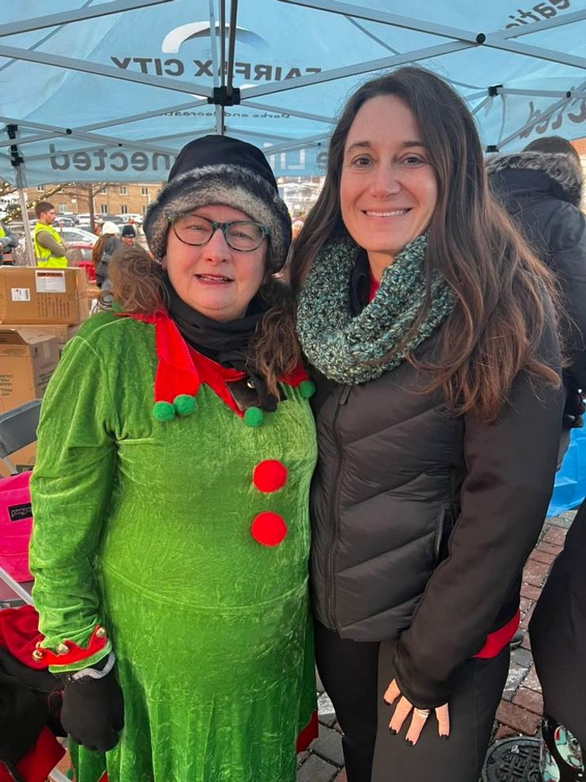

A lifelong learner, small business owner, and dedicated advocate for Fairfax families.

As the daughter of small business owners in Wilmington, DE, I grew up in a bagel and Italian bread bakery. My mom was a public high school teacher, and I remember many nights spent together watching her grade tests and papers on the couch. I learned the value of hard work at a very early age, working in our bagel shops and bakery. My parents taught me and my sister to work hard and play hard, and I've practiced this philosophy my entire life.
I graduated from the University of Delaware — go Blue Hens!! — with a Bachelors of Science in Finance and minors in Economics and Biology. I played field hockey and lacrosse in middle and high school, and t-ball and softball through elementary and middle school.
I relocated to the DC metro area in 2001 and have lived in Fairfax since 2011 with my husband and two sons and our two dogs. When we moved here, I was pregnant with our second child and our oldest was almost 2. They have been so fortunate to grow up in our community, attend our city schools, and have many of the same friends now that they made in preschool and kindergarten.
Fairfax City truly is a gem, and I want to help protect, maintain and enhance what makes us shine.
Controller for a company advancing care and innovation in the animal health sector. Prior to that, 9 years as a public accountant. I also run my own small business providing accounting, bookkeeping, and tax services right here in the city.
B.S. in Finance from University of Delaware with minors in Economics and Biology. Committed to educational excellence for all Fairfax students.
Married, raising two teenage sons — 15 and 17 — both at Fairfax High School, both deeply involved in sports. Plus two dogs. You'll find us at FHS football and basketball games year-round!
Regular presence at city events including Rock The Block and other family-friendly gatherings throughout Fairfax.
Doing the right thing, even when it's hard. Transparency in decision-making and accountability to residents.
City Council isn't about politics — it's about serving the people who call Fairfax home.
It takes courage to ask questions. I believe in informed decision-making and representing your voice.
Daughter of small business owners who ran a bagel and Italian bread bakery. Learned work ethic early.
Earned B.S. in Finance, minors in Economics and Biology. Played field hockey and lacrosse.
Began my career in the DC area, working in finance and accounting.
Moved to Fairfax City with my family. Started our family and raised two sons in our community.
Honored to be elected by my neighbors to serve on Fairfax City Council.
Asking for your vote to continue serving Fairfax and building our future together.
When I'm not in council meetings, I'm cheering on our local sports teams, walking our dogs, or enjoying all the family-friendly events that make Fairfax special.
I'm always happy to connect with residents. Reach out anytime!